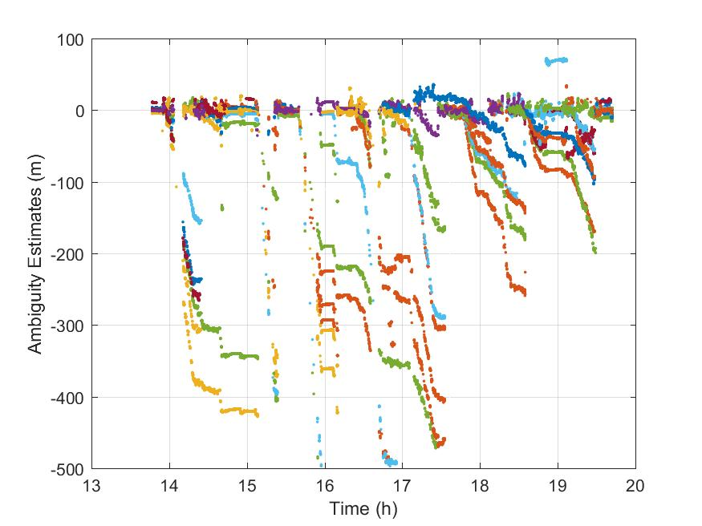

Station: SITEPROCESSING OPTIONS
Observation File: 13_46_34-2017_09_22-gps_2xxnew.17o
Begin Processing: 13:46:55
End Processing: 19:42:13
Date of Observation: 2017/9/22
Date of Submission: 18-Dec-2017 14:04:28
Processing Time: 989.50 seconds
Positioning Type: KinematicEQUIPMENT INFO
GPS Orbit and Clock Products: IGS Final orbits & IGS Final clocks
GPS Observables Processed: Pseudorange (P1/P2) and Carrier-phase (L1/L2)
Linear Combination: Iono-free
A Priori Carrier-Phase Std Dev: 0.015 m
A Priori Pseudorange Std Dev: 2.000 m
Cutoff Elevation Angle: 10 degrees
Ocean Tidal Loading: Yes
Body Tidal Loading: Yes
Maximum Iterations: 5
Positional Convergence Condition: 1 m
Receiver Name:NEUTRAL ATMOSPHERE
Antenna Type: unknown
Antenna type not recognized!
Antenna Calibration: IGS ANTEX - Absolute
Marker to ARP: 0.000 m
ARP to APC: 0.000 m
NAD model: VMF1-gridded - VMFG_20170922FINAL COORDINATES (IGS14 - Epoch 2017.7)
Initial A Priori NAD: 2.387 m
A Priori NAD Std Dev: 0.100 m
NAD Process Noise: 5.0 mm/sqrt(h)
Mapping Functions: Vienna Mapping Function
Gradient Estimation: Estimated
A Priori Horizontal Gradients: 0.000 m
A Priori Horizontal Gradients Std Dev: 0.001 m
Gradient Process Noise: 0.3 mm/sqrt(h)
Std. Dev. (X,Y,Z): 0.3573 0.5067 0.7038 (m)RESIDUALS
Carrier-Phase: Mean = -0.001m / Std Dev = 0.048m / RMS = 0.048m
Pseudorange: Mean = 0.049m / Std Dev = 2.322m / RMS = 2.323m


AMBIGUITIES
